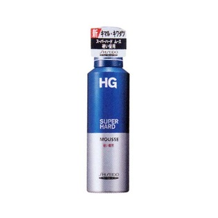

返回列表
产品名称：ＨＧ スーパーハードムース 硬い髪用a

資生堂 ＨＧ スーパーハードムース 硬い髪用a １８０ｇ
メーカー 資生堂
JANコード 4901872899463
商品の特徴
硬い髪・くせ毛にしなやかさを与え、まとまりやすく強力セット。湿気にも強く、ヘアスタイルを長時間キープできます。
後残りしない超微香性です。
成分・分量
【成分】水、エタノール、LPG、(メタクリロイルオキシエチルカルボキシベタイン/メタクリル酸アルキル)コポリマー、水添ポリイソブテン、PEG-60水添ヒマシ油、塩化アルキルトリメチルアンモニウム、PPG-2デセス-12、セテス-20、イソプロパノール、香料
用法及び用量
缶をよく振り、下向きに適量を出しスタイリングします。